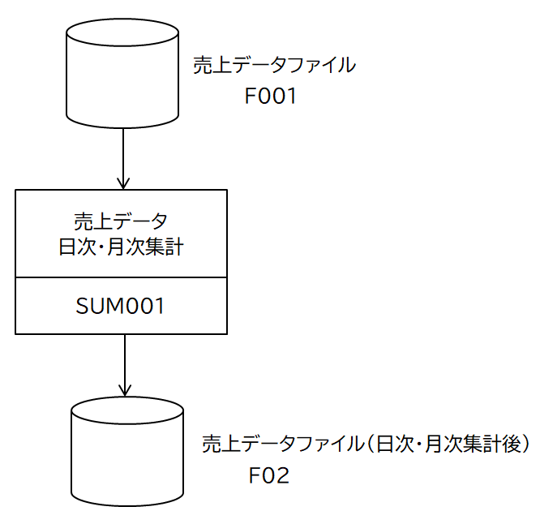
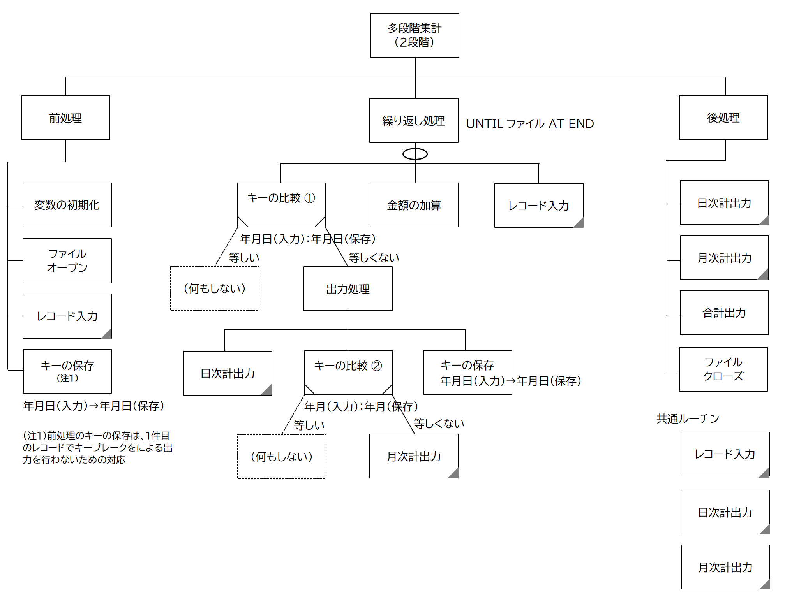
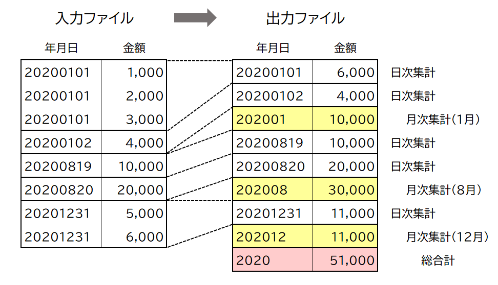

処理パターン(１) 多段階集計
COBOLが活躍した時代はデータベース（SQL）が実用化される以前で、データの保存は基本的に順編成ファイルに行っていた。アクセス方法は順次の読み書きだけなので、データの抽出や集計を行うには、ファイルをソートし、ここで紹介するテクニックを駆使する必要があった。
これから紹介するサンプルプログラムをテンプレートとして利用すれば、COBOLで扱う大概のアプリケーションに対応できるので参考にして頂きたい。
多段階集計は特定のレコード項目をキーにして特定の項目（数値や金額など）を集計するテクニックである。キーの指定により集計の段階をコントロールできるのでこのような名前になっている。
機能仕様
入力ファイルは、日付と売り上げ金額から構成された売り上げレコードの集まりである。同じ日付の売り上げレコードは複数あるとする。データは日付の昇順でソートされている。
このファイルを読み込み、日ごと及び月ごとに金額をサマリーし、それぞれ一件のレコードして出力する。また総合計のレコードも作成する。
入出力構成図
プログラム構造図
処理パターンを理解する上での核心部分。ソースコードと比較しながら見ていけば記述ルールは理解していただけると思う。

COBOLソースコード
処理前後のファイルの内容
もうひとつ別の方法
キーブレークの方法として、上記はひとつのループの中で、日次・月次それぞれキー判定を行い、出力をコントロールしている。
同じことを行うために、キーごとにループを回す方法もある。次の例では全体のループの中に、外側に月次で集計するループ、内側に日次で集計するループを保持し、それぞれのループの中で集計・出力を行なっている。
ひとつ注意することは、キーブレーク用のキーの保存を日次・月次で別に行うこと。そうしないとファイルの終了の判定ができなくなる。
両者、特に一長一短があると思えないので、どちらで行っても構わないと思う。強いて言えば、前者はファイル読み込み終了後に最後に残った集計結果を後処理で出力する必要があり、共通の出力処理が別の場所でもう１回発生することがやや欠点か？（個人的には上記の方法に馴染んでいたので最初に紹介しただけのこと）